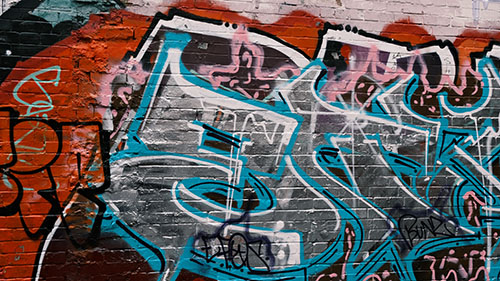
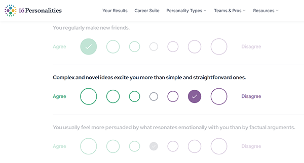

When Game of Pig was introduced for our Game On! Project, I immediately knew I would be upgrading Pig. Despite this, I was utterly stumped as to what I could change. I had no ideas! And being idea-less is very bad for a designer. For this reason, I chose to read David Shariatmadari’s "I was Asked to Invent the Next Wordle. How Hard Could it Be?" and, like a charm, I now have an idea. My struggle with the Game of Pig was rooted in how simple it was, how fast it was, and how some functions, such as pass, did not make sense. To make the game more challenging, I have chosen to make the winning condition scoring a perfect 30 points. If a player scores over 30 points, the other play automatically wins. This will keep the playing time short, while adding a bit more skill to the game. With these rules, passing can be strategic, and increase the player’s chance of winning.
Other rules, such as a single one being thrown to change the player’s turn, will remain the same. Another rule that will remain the same is throwing snake eyes to zero out the player’s points, and pass the turn to the next player. One possible problem with my new rule is the fact players could get in a passing war, preventing the game from contiuning. To counter this, I will make a condition that a player may not pass their turns consecutively. They must play at least one turn before passing again. This ensures the game continues, and one player will be victorious.
The part of Shariatmadari’s article that inspired these modifications was his discussion with a game development colleague about what makes a game addicting. The colleague stated that a game must balance skill and luck, even if a player is highly skilled, they can still be at a disadvantage. Although I am only changing 2 rules of Pig, I believe these changes add skill into the equation, whereas before Pig was simply a game of luck.
Learning Journal 4

Huanxin Cheng, Graffiti, 2026
Huanxin’s photograph focuses on street art and how people shape the streets they inhabit. This image focuses entirely on the form of the graffiti, leaving very little context about the location or culture of the street. What strikes me about this image is its cohesive color palette and placelessness. This street could be anywhere. It could be here in Davis or on the other side of the world. We simply do not know.
The image itself feels like a close-up, but it is not based on the size of the bricks in the image. This is most likely a mid-range shot, showing a large artwork on a big section of a wall or building. The overlapping textures from the different kinds of paints, finishes, lines, and layering add complexity and interest to the photograph. Although this image obviously displays street art, its location remains mysterious.
This photo is already very poetic; however, its narrative can be pushed by combining it with other poetic or realistic images. One narrative strategy could be to slowly reveal the context of the images, placing the street in a climate, country, and culture. To craft a unique and visually rich story, I recommend revealing the heart of the street’s inhabitants through these images. Are the inhabitants creating signage, tags, objects, or people in street art? Is this done for political causes or personal expression? How does this divide or unite the community? What can we learn about human beings from these arrangements of images? I am excited to see what Huanxin will do.
Giulia Zappia, Bench, 2026
Out of the photos I have taken so far, this is my favorite. I like how the flash illuminates the bench, but the pockets of sunlight from the tree’s canopy remain untouched. To me, this photo feels timeless. It looks like it was taken in summer or spring, but it was taken in winter. It is serene and quiet. Under the tree’s canopy, the bench appears to exist in its own dimension.
In real life, this is my thinking bench. I walk here when I am happy, sad, or whenever I want to escape life and think. I have brought friends here, but it is uniquely my own space. I have climbed this tree and lain down on this bench. During the day, birds chirp, and in the evening, bats hang on the branches.
This image relates to my topic of life and death in American culture by showcasing the beauty of stillness. Life is ever constant, but death is static. This image exists between the two. The bench is surrounded by life, but it is not alive. No matter the season, it is cold and unmoving. Still, this bench is a source of peace and stability for me. I think this is similar to death. Like death, the bench is a place to rest after the chaos of life. This collection tells a story about me by showcasing my perspective on this topic. In my collection of images, I do not plan to update this image, but I will amplify its symbolism by pairing it with other images of the cemetery and old family photos.
My goal in this project is to showcase how death and cemeteries can be places of remembrance and peace, rather than scary or sad.
Learning Journal 3
Like the images in the New York Times’ “10 Intriguing Photographs to Teach Close Reading and Visual Thinking Skills”Roshan Sahu uses imagery and interaction to start conversations, attract clientele, and captivate audiences. Roshan Sahu’s portfolio website begins with a low-impact design, incorporating a welcome message and interactive text. Upon scrolling, this simple layout evolves into a narrative, with the small image at the bottom of the welcome screen expanding into a new background, featuring Sahu’s projects.
Sahu’s portfolio design centers around the user’s scroll and animated transitions; however, in one section of his website, the interaction rules suddenly change. In his about me section, the user’s scroll is no longer effective. At first, I was very confused as to how I could navigate the carousel layout. However, after seeing that the cursor was a hand, I discovered I could click and drag to access the carousel. Although this change in interaction was fun and effectively blended the physical and digital, I did not figure it out until I left the section and returned later. A noticeable change, such as the cursor growing bigger, changing color, or more obviously becoming a hand, would have helped me adapt with ease.
Sahu’s portfolio is very inspiring to me. I really enjoyed how interdisciplinary his design is. From motion design to graphic and photography, Sahu crafted a unique website that reflects his personality and work. As designers, it is important to appeal to both the senses and emotion. Images are emotional, language is emotional, sounds are emotional, and context is key. Creating a design lacking in context, although it may look very cool, will produce a strange, otherworldly feeling in its audience. If this is your intention, then great! However, when trying to communicate a cohesive narrative, it is important to provide enough context to invite the audience’s curiosity. I think Sahu did this effectively.
Learning Journal 2
In “Overuse of Overlays: How to Avoid Misusing Lightboxes” Kathryn Whitenton explains why overlays are often so annoying. As someone who grew up in the birth of the digital age, I associate overlays with advertisements more than anything else. On websites that offer a free service, such as Citation Machine, overlays are used excessively to pack in advertisements in an effort to generate more revenue. As a result of this, I stopped using Citation Machine entirely.
Similar to Whitenton, I consider overlaps unnecessary most of the time. The only ones I truly enjoy are the free coupon codes I get when trying a new digital storefront. However, I also think they can be very beautiful and effective when used properly. For instance, when I am completing an important adult task, such as paying a bill or rent, I appreciate the confirmation lightbox that pops up because it gives me a moment to reflect on my decision and ensure the information is correct. Without these overlays, I would have accidentally tipped someone a hundred dollars instead of one dollar for coffee quite a few times.
In my own designs, I will only use overlays if they genuinely ease the navigation process. Many overlays pop up when a user first enters a site. As a user, I find this irritating, as it interrupts the completion of my current task. Even the free coupon lightboxes can be annoying in this case. For a coupon overlay, a better time to pop up would be at checkout, right before entering payment information. This is because their information is relevant to the user’s current task, thus preventing the interruption. This is the general rule I think overlays should follow, as highlighted by Whitenton.
Learning Journal 1
I do not enjoy filling out forms, even the ones that are supposed to be fun, like the MBTI Personality quiz and the ‘what Greek god are you a child of?’ quiz. I find most forms tedious. To me, they are a necessary evil of internet life. However, knowing the lengths product and UX designers go to improve user experience is comforting. Unsurprisingly, I have not designed many forms, but even in the ones I have designed, I missed key details highlighted by this article. In my case, I used universally sized input boxes, frequent drop-down menus, and no written instructions for tasks such as creating passwords. My design focused on aesthetics rather than usability and inclusivity. In the future, I will refer back to this article while designing forms. Although aesthetics are important, a smooth, non-irritating completion process is much more important to my user and me.

I enjoy the form design of 16Personalities’ MBTI personality quiz. 16Personalities uses a highly legible and easy-to-understand design which avoids visual overload. The buttons for answer options shrink and turn gray while approaching neutral, and grow larger and more colorful as they approach strongly agree and strongly disagree. This decision exemplifies the impact of the user’s choice and encourages them to think critically as to whether they agree or disagree with the question. Other aspects of the design, such as the completion bar encourages users to continue filling out the form because they are aware of their progress towards the end point. Other small details, such as automatic scrolling forward after completing a question, reduce clicks and promote easy completion.